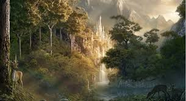
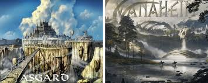
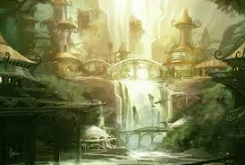
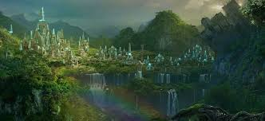
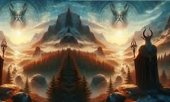

Vanaheim
Hogar de los dioses Vanir:
Los Vanir son una de las dos grandes familias de dioses en la mitología nórdica, junto con los Æsir. Los dioses Vanir están asociados con la fertilidad, la abundancia, la paz, la naturaleza y la magia. Algunos de los dioses Vanir más conocidos son: Freyr: Dios de la fertilidad, la agricultura, la prosperidad y la paz. Freyja: Diosa del amor, la fertilidad, la belleza y la magia (seiðr). Njörðr: Dios del mar, la navegación, los vientos y la riqueza.
Ubicación y naturaleza:
Vanaheim se describe como un lugar fértil, lleno de vegetación y vida, en contraste con los paisajes áridos o inhóspitos de otros mundos como Jötunheim o Helheim. Está vinculado con el equilibrio natural y la armonía.
Relación con los Æsir:
Los Vanir y los Æsir estuvieron inicialmente en conflicto en la llamada Guerra de los Dioses, una guerra mítica entre estas dos tribus. La guerra terminó con un tratado de paz, y como resultado, los dioses Vanir Freyr, Freyja y Njörðr se unieron a los Æsir como parte del acuerdo. Esto simboliza la integración de la fertilidad y la magia (Vanir) con el orden y la fuerza guerrera (Æsir).
Asociación con la fertilidad y la magia:
Vanaheim simboliza la abundancia y el crecimiento, tanto físico como espiritual. Los Vanir son maestros de la magia seiðr, una forma de hechicería y adivinación que incluso Odín aprendió de Freyja.
Relación con los humanos:
Aunque no hay mucha interacción directa entre Vanaheim y los humanos en los mitos, los dioses Vanir son venerados por aspectos esenciales para la vida humana, como la fertilidad, la cosecha y el bienestar..
Vanaheim y los Nueve Mundos:
Vanaheim es uno de los Nueve Mundos sostenidos por el árbol cósmico Yggdrasil. A menudo se sitúa cerca de Asgard en el esquema cosmológico, reflejando la paz y la unión alcanzada entre los Vanir y los Æsir.
Simbolismo
Naturaleza y armonía: Un mundo que representa la fertilidad, la paz y la riqueza de la naturaleza. Conexión mágica: Es el origen de la magia seiðr, que influye tanto a los dioses como a los humanos. Integración y balance: La relación entre Vanaheim y Asgard simboliza el equilibrio entre diferentes aspectos del poder divino: la fertilidad (Vanir) y la fuerza (Æsir).